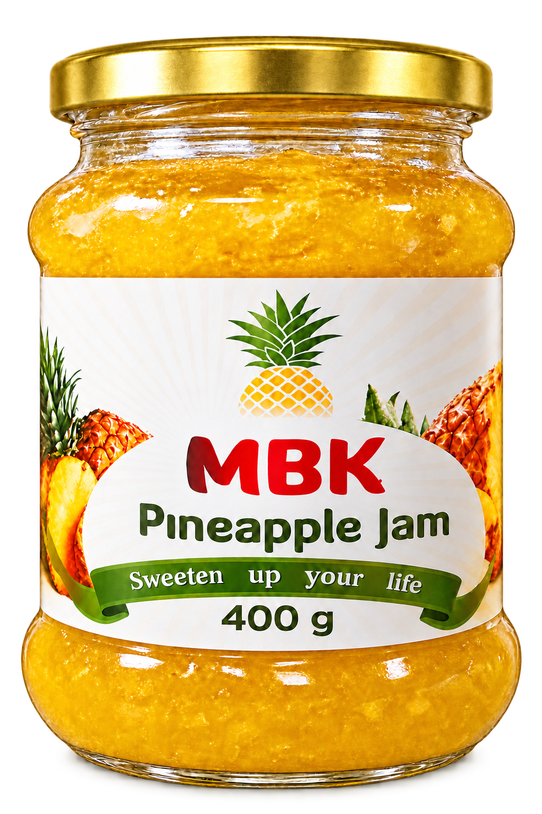
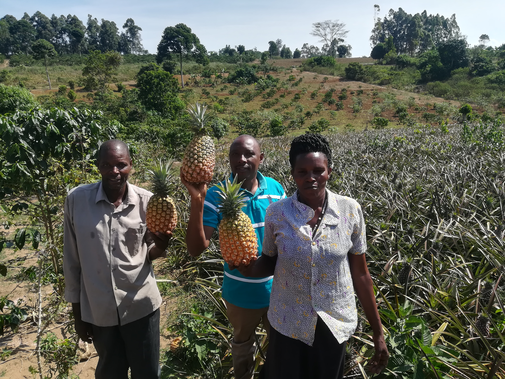

Value-added product
MBK Pineapple Jam
Made from locally grown pineapples, the jam initiative reduces post-harvest loss and creates a stronger market for smallholder farmers.
- Pack size
- 400 g
- Enquiries
- Retail & wholesale

Products
Fresh fruits and vegetables from farming communities, plus pineapple jam that turns local harvests into lasting value.
Value-added product
Made from locally grown pineapples, the jam initiative reduces post-harvest loss and creates a stronger market for smallholder farmers.


Fresh produce
Romaka works with farmers producing pineapples, watermelons, green peppers, passion fruits and mangoes for suitable markets.
Ask about availability →For shops, hotels, restaurants and buyers